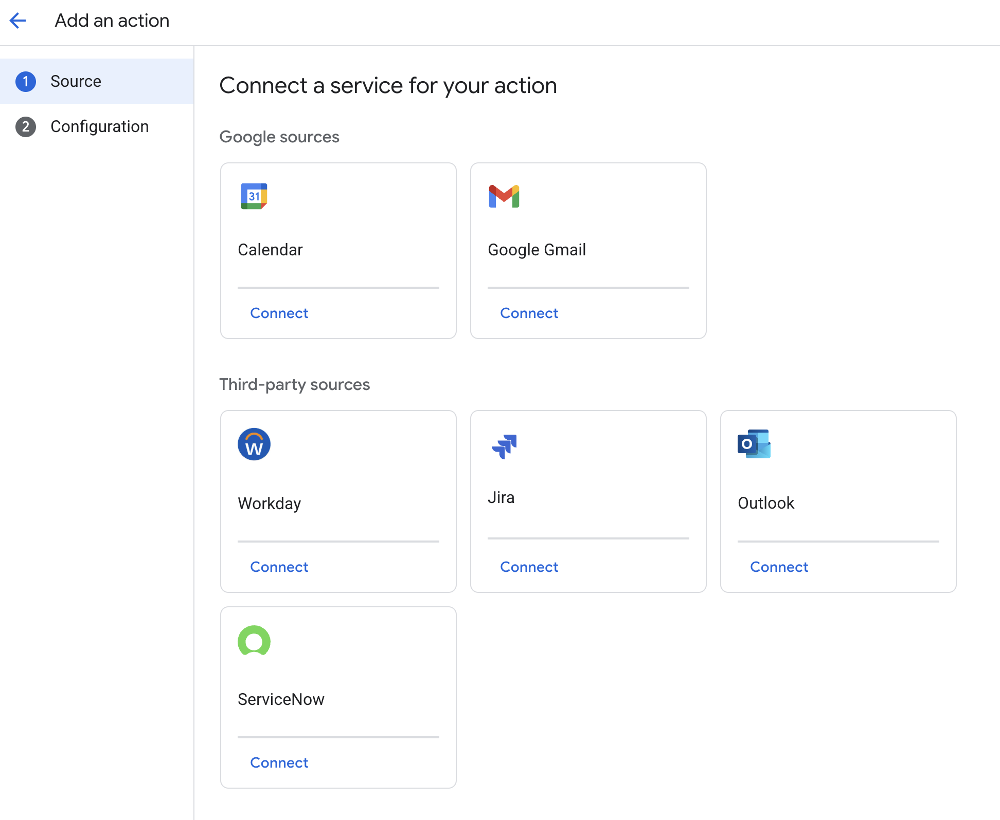
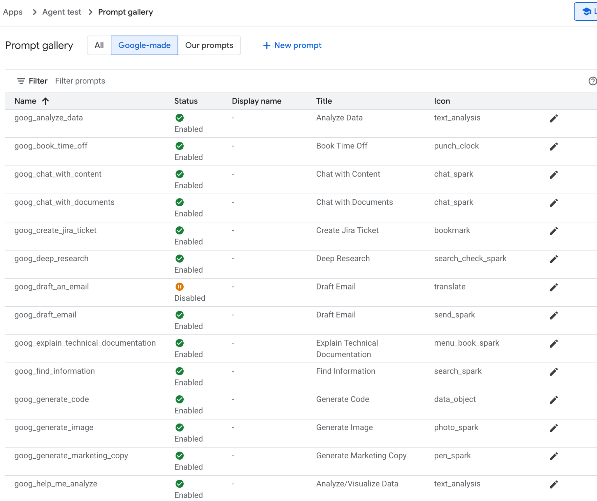
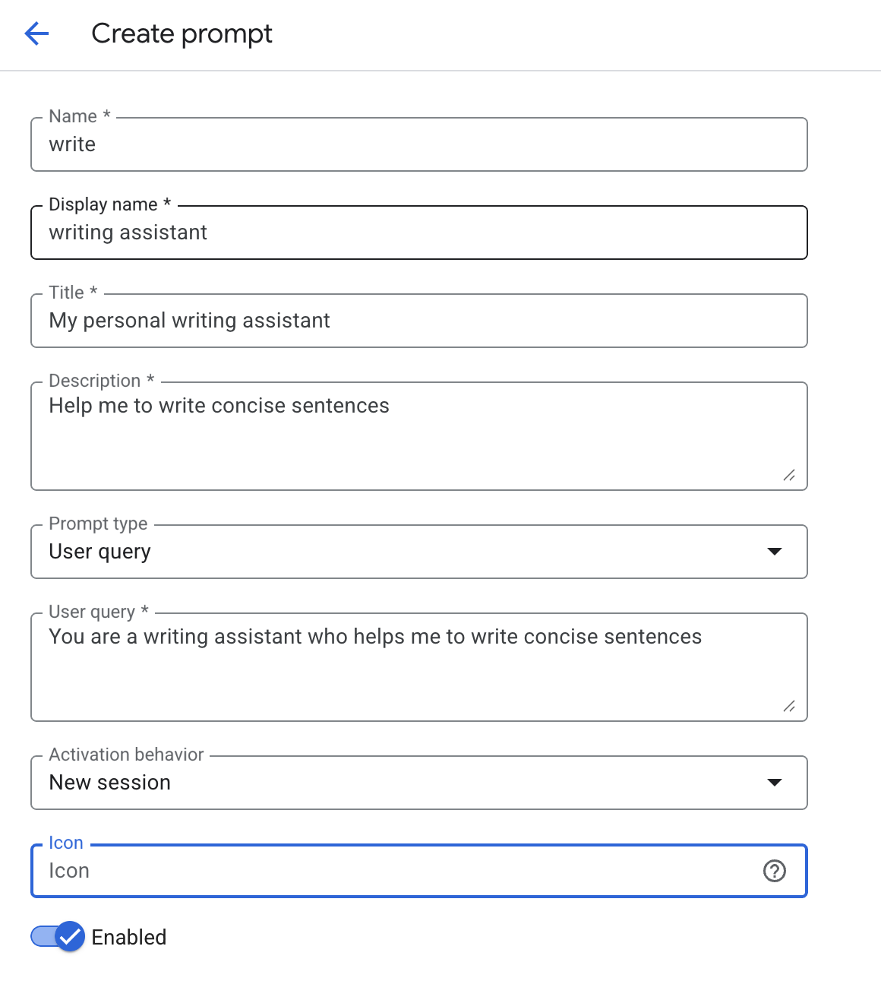
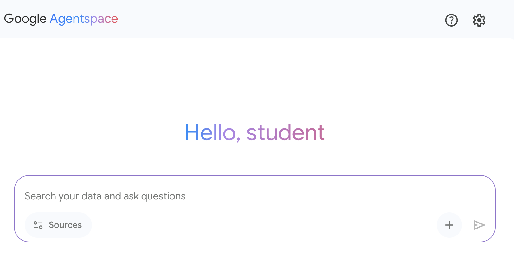

读书 · Agentic Design Patterns · 中英对照
附录 · 附录 D：用 AgentSpace 构建智能体
Appendix D - Building an Agent with: Appendix D · 《Agentic Design Patterns》 · Antonio Gulli · 2025
介绍用 AgentSpace 平台无代码构建企业级 AI 智能体，涵盖知识图谱与多智能体协作。
← 返回导读 原书 PDF · 第391页起 上一章:第102章 下一章:第104章
本章要点
① AgentSpace 统一搜索企业数字足迹并构建企业知识图谱 ① 智能体可自主推理、规划并执行多步任务 ① 支持 A2A 协议实现多智能体互通协作 ① Agent Designer 提供无代码界面降低构建门槛
本章一图流
统一搜索聚合企业数字足迹→知识图谱构建企业知识网络→Agent Designer无代码搭建智能体→自主推理执行规划并完成多步任务→A2A 协作多智能体互通协作
AgentSpace 从数据到智能体：搜索建图、无代码构建、自主执行、多体协作。
原书插图




本章划线句
划线句(逐字校验)
"These agents are not merely chatbots; they can reason, plan, and execute multi-step actions autonomously."
为什么值得划线:点明智能体区别于聊天机器人的核心能力
划线句(逐字校验)
"AgentSpace constructs an enterprise knowledge graph, mapping the relationships between people, documents, and data."
为什么值得划线:揭示企业知识图谱是上下文理解的基础
划线句(逐字校验)
"This approach abstracts the underlying technical complexity, enabling the construction of specialized multi-agent systems without requiring deep programming expertise."
为什么值得划线:概括无代码构建多智能体系统的价值
正文(英中对照)
"Appendix D - Building an Agent with AgentSpace Overview AgentSpace is a platform designed to facilitate an "agent-driven enterprise" by integrating artificial intelligence into daily workflows. At its core, it provides a unified search capability across an organization's entire digital footprint, including documents, emails, and databases. This system utilizes advanced AI models, like Google's Gemini, to comprehend and synthesize information from these varied sources. The platform enables the creation and deployment of specialized AI "agents" that can perform complex tasks and automate processes. These agents are not merely chatbots; they can reason, plan, and execute multi-step actions autonomously."
附录 D - 使用 AgentSpace 构建 Agent 概述 AgentSpace 是一个旨在通过将人工智能集成到日常工作流中来促进"代理驱动型企业"（agent-driven enterprise）的平台。其核心是在组织整个数字足迹（包括文档、电子邮件和数据库）中提供统一的搜索能力。该系统利用先进的 AI 模型（如 Google 的 Gemini）来理解和综合来自这些多样来源的信息。该平台支持创建和部署专门的 AI"代理"（agent），这些代理可以执行复杂任务并自动化流程。这些代理不仅仅是聊天机器人；它们能够自主推理、规划并执行多步骤操作。
导读注:点明 AgentSpace 的核心价值：代理能自主推理与多步执行，而非仅聊天。
"For instance, an agent could research a topic, compile a report with citations, and even generate an audio summary. To achieve this, AgentSpace constructs an enterprise knowledge graph, mapping the relationships between people, documents, and data. This allows the AI to understand context and deliver more relevant and personalized results. The platform also includes a no-code interface called Agent Designer for creating custom agents without requiring deep technical expertise. Furthermore, AgentSpace supports a multi-agent system where different AI agents can communicate and collaborate through an open protocol known as the Agent2Agent (A2A) Protocol. This interoperability allows for more complex and orchestrated workflows."
例如，一个智能体（agent）可以研究某个主题、编写带引用的报告，甚至生成音频摘要。为实现这一点，AgentSpace 构建了一个企业知识图谱（enterprise knowledge graph），映射人员、文档和数据之间的关系。这使 AI 能够理解上下文，并给出更相关、更个性化的结果。该平台还包含一个名为 Agent Designer 的无代码界面，用于创建自定义智能体，无需深厚的技术专业知识。此外，AgentSpace 支持多智能体系统（multi-agent system），其中不同的 AI 智能体可以通过一个名为 Agent2Agent（A2A）Protocol 的开放协议进行通信与协作。这种互操作性支持更复杂、更可编排的工作流。
导读注:亮点是企业知识图谱与A2A 协议支撑的多智能体协作。
"Security is a foundational component, with features like role-based access controls and data encryption to protect sensitive enterprise information. Ultimately, AgentSpace aims to enhance productivity and decision-making by embedding intelligent, autonomous systems directly into an organization's operational fabric. How to build an Agent with AgentSpace UI Figure 1 illustrates how to access AgentSpace by selecting AI Applications from the Google Cloud Console. 1 Fig. 1: How to use Google Cloud Console to access AgentSpace Your agent can be connected to various services, including Calendar, Google Mail, Workaday, Jira, Outlook, and Service Now (see Fig. 2)."
安全是基础组件，具备基于角色的访问控制（role-based access controls）和数据加密等功能，以保护敏感的企业信息。最终，AgentSpace 旨在通过将智能、自主的系统直接嵌入组织的运营架构中，来提升生产力和决策能力。如何使用 AgentSpace UI 构建 Agent 图 1 展示了如何通过从 Google Cloud Console 中选择 AI Applications 来访问 AgentSpace。1 图 1：如何使用 Google Cloud Console 访问 AgentSpace 你的 agent 可以连接到各种服务，包括 Calendar、Google Mail、Workaday、Jira、Outlook 和 Service Now（见图 2）。
导读注:点出 AgentSpace 的安全基础与可连接多种企业服务两大要点。
"Fig. 2: Integrate with diverse services, including Google and third-party platforms. 2 The Agent can then utilize its own prompt, chosen from a gallery of pre-made prompts provided by Google, as illustrated in Fig. 3."
图 2：与多种服务集成，包括 Google 及第三方平台。2 随后，Agent 可以使用自己的 prompt，该 prompt 从 Google 提供的预制 prompt 库中选择，如图 3 所示。
导读注:展示 Agent 可集成多平台并选用 Google 预制 prompt 库。
"Fig.3: Google's Gallery of Pre-assembled prompts In alternative you can create your own prompt as in Fig.4, which will be then used by your agent 3 Fig.4: Customizing the Agent's Prompt AgentSpace offers a number of advanced features such as integration with datastores to store your own data, integration with Google Knowledge Graph or with your private Knowledge Graph, Web interface for exposing your agent to the Web, and Analytics to monitor usage, and more (see Fig. 5) 4 Fig. 5: AgentSpace advanced capabilities Upon completion, the AgentSpace chat interface (Fig. 6) will be accessible. Fig. 6: The AgentSpace User Interface for initiating a chat with your Agent. 5"
图3：Google 的预组装 prompt 库（Gallery of Pre-assembled prompts）。或者，你可以像图4那样创建自己的 prompt，随后它将被你的 agent 使用。图4：自定义 Agent 的 Prompt。AgentSpace 提供若干高级功能，例如与数据存储（datastore）集成以存储你自己的数据、与 Google Knowledge Graph 或你的私有 Knowledge Graph 集成、用于将你的 agent 暴露到 Web 的 Web 界面，以及用于监控使用情况的分析（Analytics）等（见图5）。图5：AgentSpace 高级能力。完成后，即可访问 AgentSpace 聊天界面（图6）。图6：用于发起与你的 Agent 聊天的 AgentSpace 用户界面。
导读注:概览 AgentSpace 从预置/自定义 prompt 到高级集成与聊天界面的完整能力。
结论 Conclusion
"In conclusion, AgentSpace provides a functional framework for developing and deploying AI agents within an organization's existing digital infrastructure. The system's architecture links complex backend processes, such as autonomous reasoning and enterprise knowledge graph mapping, to a graphical user interface for agent construction. Through this interface, users can configure agents by integrating various data services and defining their operational parameters via prompts, resulting in customized, context-aware automated systems. This approach abstracts the underlying technical complexity, enabling the construction of specialized multi-agent systems without requiring deep programming expertise."
总之，AgentSpace 提供了一个功能性框架，用于在组织现有的数字基础设施内开发和部署 AI agent（智能体）。该系统的架构将复杂的后端流程（如自主推理和企业知识图谱映射）与用于构建 agent 的图形用户界面连接起来。通过该界面，用户可以通过集成各种数据服务并通过 prompt（提示词）定义其运行参数来配置 agent，从而产生定制化的、上下文感知的自动化系统。这种方法抽象了底层技术复杂性，使得无需深入的编程专业知识即可构建专门的多 agent 系统。
导读注:AgentSpace 将复杂后端封装为图形界面，降低多 agent 系统构建门槛。
"The primary objective is to embed automated analytical and operational capabilities directly into workflows, thereby increasing process efficiency and enhancing data-driven analysis. For practical instruction, hands-on learning modules are available, such as the "Build a Gen AI Agent with Agentspace" lab on Google Cloud Skills Boost, which provides a structured environment for skill acquisition."
主要目标是将自动化分析能力和操作能力直接嵌入工作流，从而提高流程效率并增强数据驱动分析。为提供实践指导，现有动手学习模块可用，例如 Google Cloud Skills Boost 上的“Build a Gen AI Agent with Agentspace”实验，它为技能获取提供了结构化环境。
导读注:强调将自动化能力嵌入工作流，并给出可上手的 Agentspace 实验。
参考文献 References
"1. Create a no-code agent with Agent Designer, https://cloud.google.com/agentspace/agentspace-enterprise/docs/agent-designer 2. Google Cloud Skills Boost, https://www.cloudskillsboost.google/ 6"
1. 使用 Agent Designer 创建一个无代码 agent（智能体），https://cloud.google.com/agentspace/agentspace-enterprise/docs/agent-designer 2. Google Cloud Skills Boost，https://www.cloudskillsboost.google/ 6
导读注:列出两项资源：无代码创建 agent 与技能提升平台。
来源与用途
《Agentic Design Patterns》,Antonio Gulli · 2025 · 原书 PDF。本页为学习用途的对照整理,版权归原作者;有问题到读书导师处提问,答案只引用书中原文并标注章节。
← 第102章 · 智能体框架速览 Appendix C: Agentic Frameworks Overview 导读 第104章 · 命令行上的 AI 智能体 AI Agents on the CLI →